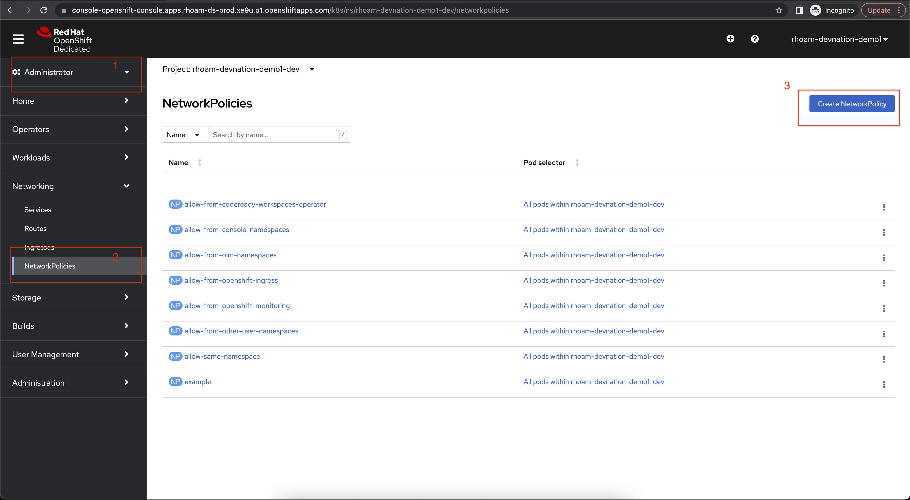
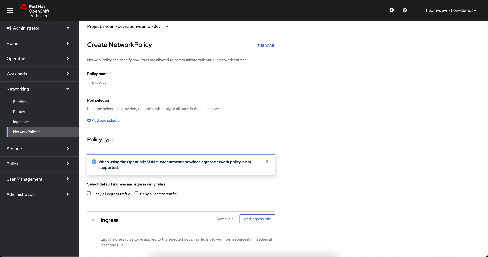
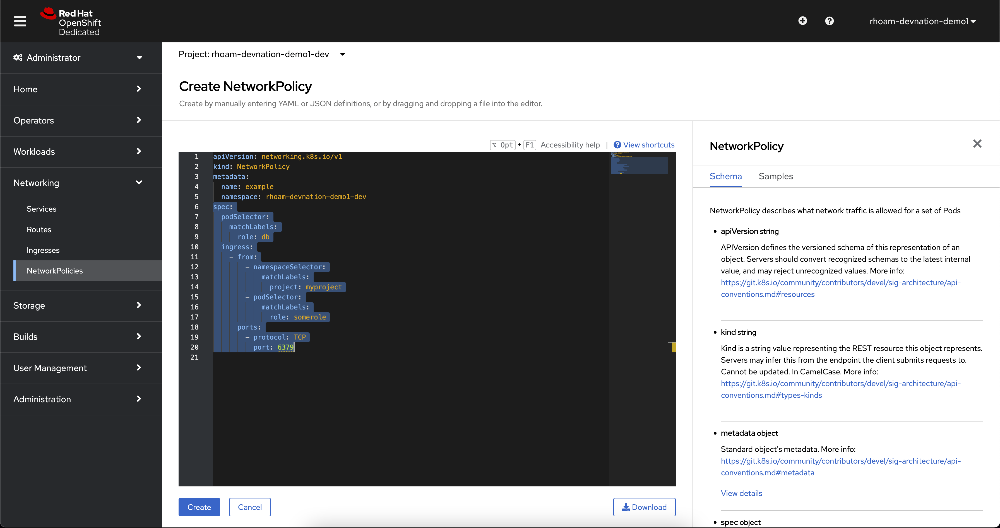
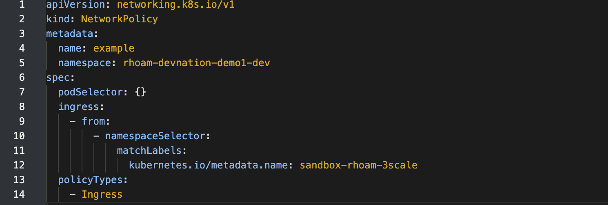
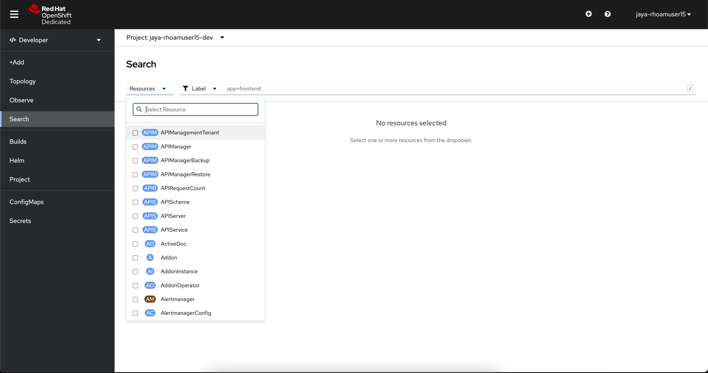
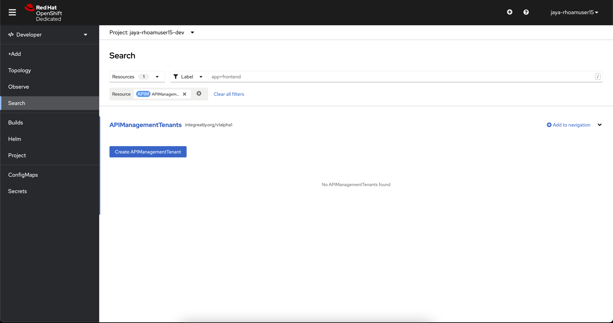
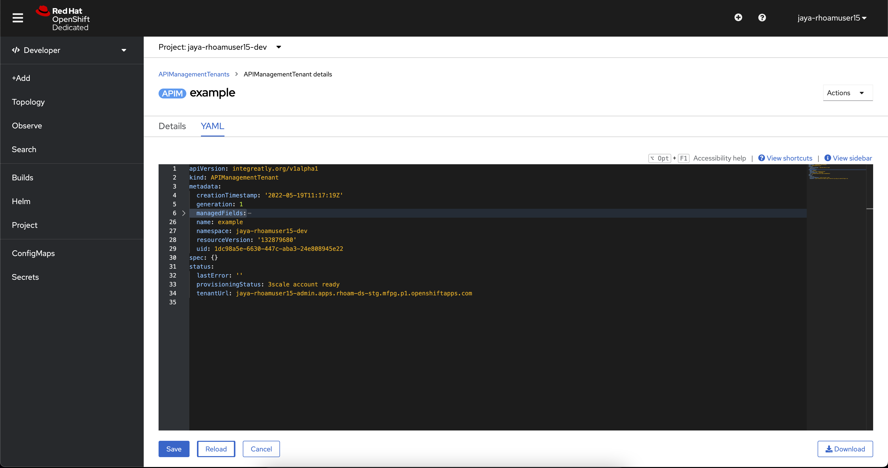

Red Hat OpenShift API Management
As a developer, with OpenShift API Management, you can manage API access, policy, and traffic controls, and reuse existing assets by connecting to an API. You can enhance the security of the APIs and developer portal by leveraging Red Hat’s single sign-on technology.
You will use the the newly lauched Developer Sandbox for Red Hat OpenShift API Management, which provides you with a private OpenShift API Management tenant. You will also be able to deploy your services to learn how to manage them with OpenShift API Management.
Signup for Red Hat OpenShift API Management sandbox
Register for a Developer Sandbox Red Hat OpenShift API Management for by clicking on the red button in the Red Hat OpenShift API Management user activities page
You will be required to create a Red Hat account and pass our two-factor authentication process by providing your phone number. Do not worry! This step will not save your phone number, we are just protecting our hardware from crypto mining.
You will also be asked to confirm the request through an email sent to your inbox. After this, you will be able to login to the sandbox.
Once you launch the sandbox, follow these steps to setup an RHOAM sandbox tenant
Create a Network Policy on OpenShift Dedicated to allow access from API Management
At the moment, OpenShift Dedicated needs a Network Policy to be manually created to allow access from Red Hat OpenShift API Management. This is would soon be automated. But for the purpose of this workshop, you will need to add this manually if this doesn’t already exist.
-
Click on the Administrator perspective, navigate to Network Policies, and click on Create NetworkPolicy button
 -
Click on Edit YAML link
 -
This is how the page will look like with the sample YAML
 -
In the YAML view, replace the entire spec section with the content below. The spec section is shown as highlighted in the above screenshot.
spec: podSelector: {} ingress: - from: - namespaceSelector: matchLabels: kubernetes.io/metadata.name: sandbox-rhoam-3scale policyTypes: - Ingress -
This YAML should look like this now
 -
Click on the Create button at the bottom of the page.
Now we are ready to go ahead and provision the API Management Tenant
Create a API Management Tenant
-
From the Projects dropdown on the top of the page, set the project namespace as <username>-dev from the projects that have been already created for you.
-
Click on Search from the left navigation
-
Click on Resources to search for
APIManagementTenantand select it. -
Select Create APIManagementTenant button
 -
You will be taken to the YAML configuration of this resource. Click the Create button at the bottom of the YAML displayed.
-
You will be taken to the Details page of this resource. Click on the YAML tab to view the changes to the YAML configuration.
-
Watch for changes to the YAML of the APIManagementTenant resource, and wait for the status to be displayed at the bottom of the YAML to become
status.provisioningStatus: 3scale account ready -
The API Management Tenant account is now provisioned and is ready for use. This may take a couple of minutes. If you prefer, you can skip to the next sections while the tenant is being setup in the background